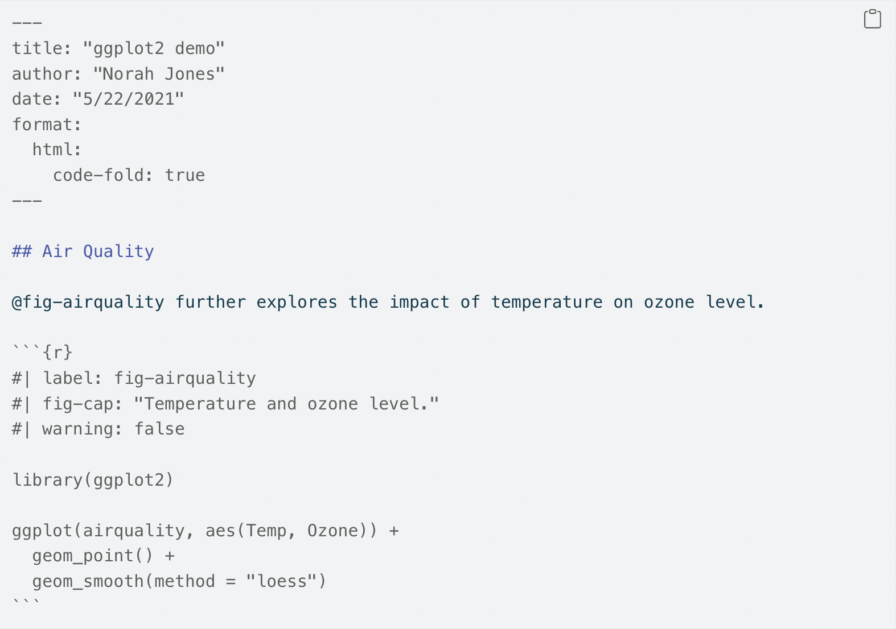

here::here("code", "_common.R") |> source()
# Load packages
if (!requireNamespace("pacman")) install.packages("pacman")
pacman::p_load(tidyr)12 Quarto
Introduzione
La crisi della riproducibilità scientifica rappresenta una delle sfide più importanti della ricerca contemporanea. Con questo termine ci si riferisce alla difficoltà, riscontrata in diverse discipline, di replicare i risultati degli studi scientifici. Sebbene le definizioni di riproducibilità varino tra i diversi ambiti, un’interpretazione ampiamente condivisa la identifica come la capacità di ottenere gli stessi risultati utilizzando i medesimi dati di input e seguendo gli stessi passaggi computazionali nei metodi e nelle analisi.
La pratica scientifica è profondamente radicata nella formazione accademica: ciò che viene insegnato nelle aule universitarie si riflette direttamente nel lavoro svolto nei laboratori, sul campo e nell’analisi dei dati. Riconoscendo questo stretto legame tra didattica e ricerca, molti studiosi sostengono l’importanza di integrare i metodi di riproducibilità nei corsi universitari di data science, sia a livello undergraduate che graduate (Dogucu, 2024). L’educazione alla data science che incorpora la riproducibilità nell’analisi dei dati viene infatti considerata la “controffensiva statistica” alla crisi della riproducibilità.
In questo contesto si inserisce Quarto, uno strumento innovativo che affronta direttamente le sfide della crisi della riproducibilità. Quarto si colloca nella tradizione del literate programming, un approccio pioneristico introdotto da Donald Knuth negli anni ’80. Questa metodologia nasce dalla visione di unificare codice e testo descrittivo in un unico documento, rendendo i programmi non solo eseguibili ma anche comprensibili agli esseri umani. L’obiettivo è superare la tradizionale separazione tra codice e documentazione, permettendo di spiegare non solo il funzionamento tecnico di un programma, ma anche le ragioni delle scelte implementative.
Questa filosofia risulta particolarmente pertinente nell’ambito della data science e dell’analisi statistica, dove riproducibilità e trasparenza sono requisiti imprescindibili. Quarto eccelle in questo contesto, offrendo la possibilità di integrare in codice, risultati e narrazione. La sua versatilità si manifesta nella capacità di produrre diversi tipi di output - dai report agli articoli scientifici, dalle presentazioni ai documenti tecnici - in vari formati come HTML, PDF e Word, combinando efficacemente testo interpretativo, risultati numerici e visualizzazioni grafiche.
Un punto di forza distintivo di Quarto è la sua flessibilità nel supportare molteplici linguaggi di programmazione, tra cui R, Python e Julia. Lo strumento può essere utilizzato secondo tre modalità principali: per presentare conclusioni condividendo i risultati senza esporre il codice sottostante; per documentare il processo analitico includendo sia il codice che i risultati, garantendo così piena trasparenza e riproducibilità; e per annotare l’analisi, integrando interpretazioni e motivazioni delle decisioni prese durante il processo analitico.
Nonostante Quarto sia tecnicamente uno strumento da riga di comando (CLI), l’integrazione con RStudio ne semplifica notevolmente l’utilizzo, rendendo l’installazione e l’operatività accessibili anche agli utenti meno esperti nell’uso del terminale. Questa caratteristica, unita alle sue potenti funzionalità, rende Quarto una naturale evoluzione del literate programming, offrendo un ambiente di lavoro che bilancia efficacemente praticità d’uso e rigore scientifico. In questo modo, Quarto si configura come una risposta concreta alle sfide della riproducibilità nella ricerca contemporanea, fornendo gli strumenti necessari per una scienza più trasparente e verificabile. L’obiettivo di questo capitolo è quello di fornire un’introduzione pratica a Quarto.
12.0.1 Creare un documento Quarto
Un file Quarto ha estensione .qmd e segue questa struttura:

Questo file include:
- Un’intestazione YAML (metadati del documento).
- Blocchi di codice delimitati da ```.
- Testo scritto in Markdown con formattazioni semplici come titoli (
# Titolo), corsivi (*testo*), ecc.
12.0.2 Editor visivo e sorgente
- Editor visivo: simile a Google Docs, offre un’interfaccia WYSIWYM (What You See Is What You Mean). Consente di inserire facilmente immagini, tabelle, citazioni e altro.
- Editor sorgente: consente un controllo diretto sul Markdown, utile per debug e personalizzazioni avanzate.
12.0.3 Blocchi di codice
I blocchi di codice (chiamati “chunks”) eseguono codice e visualizzano i risultati. Ogni chunk è delimitato da ``` e può includere opzioni specifiche:
#| label: esempio
#| echo: false
1 + 1Le opzioni più comuni includono:
-
echo: false(nasconde il codice nel report), -
eval: false(non esegue il codice), -
message: falseewarning: false(nasconde messaggi o avvisi).
12.0.4 Figure
Le figure possono essere generate tramite codice (es. ggplot()) o inserite come file esterni. Le opzioni più comuni per il controllo delle dimensioni sono:
-
fig-widthefig-height(dimensioni della figura in pollici), -
out-width(percentuale di larghezza del documento), -
fig-asp(rapporto d’aspetto, es. 0.618 per il rapporto aureo).
Esempio:
#| fig-width: 6
ggplot(data, aes(x, y)) + geom_point()12.0.5 Equazioni
Le equazioni possono essere scritte in LaTeX, così come spiegato nell’?sec-apx-latex-math.
12.0.6 Tabelle
Le tabelle possono essere stampate direttamente o personalizzate con funzioni come knitr::kable() o pacchetti come gt:
| mpg | cyl | disp | hp | drat | wt | qsec | vs | am | gear | carb | |
|---|---|---|---|---|---|---|---|---|---|---|---|
| Mazda RX4 | 21.0 | 6 | 160 | 110 | 3.90 | 2.62 | 16.5 | 0 | 1 | 4 | 4 |
| Mazda RX4 Wag | 21.0 | 6 | 160 | 110 | 3.90 | 2.88 | 17.0 | 0 | 1 | 4 | 4 |
| Datsun 710 | 22.8 | 4 | 108 | 93 | 3.85 | 2.32 | 18.6 | 1 | 1 | 4 | 1 |
| Hornet 4 Drive | 21.4 | 6 | 258 | 110 | 3.08 | 3.21 | 19.4 | 1 | 0 | 3 | 1 |
| Hornet Sportabout | 18.7 | 8 | 360 | 175 | 3.15 | 3.44 | 17.0 | 0 | 0 | 3 | 2 |
| Valiant | 18.1 | 6 | 225 | 105 | 2.76 | 3.46 | 20.2 | 1 | 0 | 3 | 1 |
12.0.7 Caching
Per velocizzare i documenti con calcoli complessi, Quarto supporta la memorizzazione dei risultati:
-
cache: truesalva i risultati di un chunk, evitando di ricalcolarli se il codice non cambia. -
dependsonspecifica dipendenze tra chunk.
12.0.8 Gestione delle Citazioni e delle Bibliografie in Quarto
Quarto offre un supporto avanzato per la generazione automatica di citazioni e bibliografie, consentendo l’applicazione di formati personalizzati come lo stile APA. Per includere riferimenti bibliografici, è necessario creare un file .bib (ad esempio, references.bib) contenente le citazioni nel formato BibTeX. Queste citazioni possono essere ottenute direttamente da Google Scholar o altri database accademici.
Ecco un esempio di una citazione in formato BibTeX:
@article{ceccarini2024age,
title={Age-dependent changes in the anger superiority effect: Evidence from a visual search task},
author={Ceccarini, Francesco and Colpizzi, Ilaria and Caudek, Corrado},
journal={Psychonomic Bulletin \& Review},
pages={1--10},
year={2024},
publisher={Springer}
}Questa citazione deve essere inserita in un file .bib, ad esempio, references.bib. Tale file dovrà poi essere specificato nell’intestazione del documento Quarto.
12.0.8.1 Configurazione dell’Intestazione YAML
Nel file .qmd, è necessario aggiungere le seguenti righe all’intestazione YAML per collegare il file references.bib e configurare lo stile della bibliografia:
bibliography: references.bib
biblio-style: apalike
csl: apa.csl-
bibliography: Specifica il percorso del file.bib. In questo esempio, si assume che il file si trovi nella stessa cartella del documento Quarto. -
biblio-style: Imposta lo stile delle citazioni. Ad esempio,apalikeè uno stile simile allo stile APA. -
csl: Consente di utilizzare uno stile di citazione personalizzato, comeapa.csl. Puoi scaricare facilmente questi stili dal Zotero Style Repository.
12.0.8.2 Esempio Completo
Di seguito è riportato un esempio completo di un documento Quarto che include una citazione e genera automaticamente la bibliografia:
---
title: "Articolo di Esempio"
author: "Autore di Esempio"
date: "2025-09-09"
bibliography: references.bib
biblio-style: apalike
csl: apa.csl
---
## Introduzione
In questo articolo, discutiamo i cambiamenti dipendenti dall'età nell'anger-superiority effect [@ceccarini2024age].
## Risultati
I risultati mostrano che...
## RiferimentiIn questo esempio, l’identificatore @ceccarini2024age viene utilizzato per fare riferimento alla citazione contenuta nel file references.bib. Al momento della compilazione, Quarto genererà automaticamente la lista dei riferimenti bibliografici in base al formato specificato.
12.0.8.3 Citazioni Inline
All’interno di un documento .qmd, le citazioni vengono aggiunte utilizzando il simbolo @ seguito dall’identificativo della citazione specificato nel file .bib. Ad esempio:
... come evidenziato da @ceccarini2024age, si osserva che...Quarto genera automaticamente la bibliografia, includendo solo i riferimenti effettivamente citati nel documento. La bibliografia viene aggiunta alla fine del file renderizzato (ad esempio, in formato HTML o PDF).
Ad esempio, nel caso di un documento .qmd, il testo sopra sarà visualizzato così:
… come evidenziato da Ceccarini et al. (2024), si osserva che…
La citazione completa sarà inclusa automaticamente nella bibliografia, posizionata alla fine della pagina web o del documento finale. Si noti che Quarto gestisce automaticamente la formattazione e la posizione della bibliografia, garantendo coerenza e precisione.
Esempio 12.1 Per fare un esempio pratico, possiamo inserire la citazione @ceccarini2024age direttamente nel file .qmd di questa pagina web. Quando il documento viene compilato, Quarto renderà la citazione in modo appropriato, come mostrato qui: Ceccarini et al. (2024).
Si noti che, in fondo a questa pagina web, è presente un riferimento bibliografico corrispondente. Questo riferimento è stato aggiunto automaticamente da Quarto in risposta all’uso della citazione @ceccarini2024age nel testo del documento. Questo processo automatizzato semplifica la gestione delle citazioni e garantisce che tutti i riferimenti siano correttamente inclusi e formattati.
Riflessioni conclusive
Quarto è uno strumento potente per la creazione di documenti riproducibili e ben strutturati, integrando codice, risultati e testo descrittivo in un unico file. Questa introduzione dovrebbe essere sufficiente per iniziare a lavorare con Quarto, ma c’è ancora molto da imparare. Il modo migliore per rimanere aggiornati è consultare il sito ufficiale di Quarto: https://quarto.org.
Un argomento importante che non abbiamo trattato qui riguarda i dettagli di come comunicare in modo accurato le proprie idee agli altri. Per migliorare le proprie capacità di scrittura, Wickham et al. (2023) consigliano due libri: Style: Lessons in Clarity and Grace di Joseph M. Williams & Joseph Bizup, e The Sense of Structure: Writing from the Reader’s Perspective di George Gopen. Una serie di brevi articoli sulla scrittura sono offerti da George Gopen e sono disponibili su https://www.georgegopen.com/litigation-articles.html.
Bibliografia
Ceccarini, F., Colpizzi, I., & Caudek, C. (2024). Age-dependent changes in the anger superiority effect: Evidence from a visual search task. Psychonomic Bulletin & Review, 1–10.
Dogucu, M. (2024). Reproducibility in the Classroom. Annual Review of Statistics and Its Application, 12.
Wickham, H., Çetinkaya-Rundel, M., & Grolemund, G. (2023). R for data science. " O’Reilly Media, Inc.".